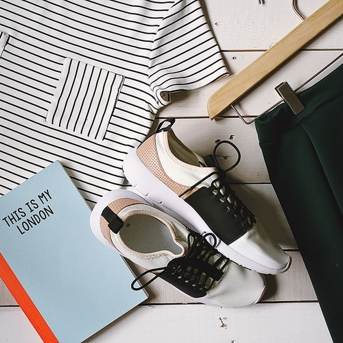
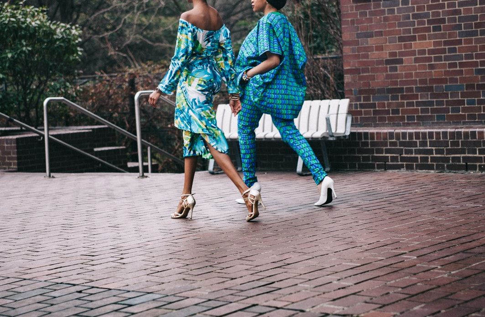

Notice, look, think, and get inspired...
Fashion can be found everywhere: magazines, runways, TV, streets, and of course your own closet. You just need to notice and get inspired by it. Once you get interested in it you can never forget to notice minor things in clothes and accessories that create the art of fashion.
